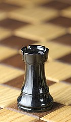
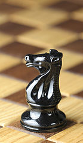

O Xadrez é um jogo de tabuleiro de estratégia, onde dois jogadores disputam com o objetivo de derrotar o rei inimigo.
Peças do Jogo:
Rei e Peões
Rei:
1 peça branca e 1 peça preta, anda apenas 1 casa em todas as direções.
Dama:
1 peça branca e 1 peça preta, anda um número qualquer de casas em todas as direções.
Torre:
2 peças brancas e 2 peças pretas, anda um número qualquer de casas na horizontal ou na vertical.
Bispo:
2 peças brancas e 2 peças pretas, anda um número qualquer de casas na diagonal.
Cavalo:
2 peças brancas e 2 peças pretas, anda em L.
Peão:
8 peças brancas e 8 peças pretas, anda 1 casa para frente, derrota uma peça na diagonal.

Torre

Cavalo
Enxadristas:
Campeonato Mundial de Xadrez da FIDE de 2019 - Magnus Carlsen
Segundo a FIDE, atualmente, os melhores enxadristas são:
Magnus Carlsen
Fabiano Caruana
Liren Ding
Ian Nepomniachtchi
Levon Aronian
Aberturas:
Uma abertura é uma sequência de movimentos iniciais que garantem um bom início de jogo, cada abertura pode conter variantes, que determinam as sequências realizadas pelos jogadores. Alguns exemplos de aberturas mais utilizadas. Em alguns casos Aberturas são colocadas para peças brancas, e Defesas para peças pretas, sendo a última dependente dos movimentos das pretas.